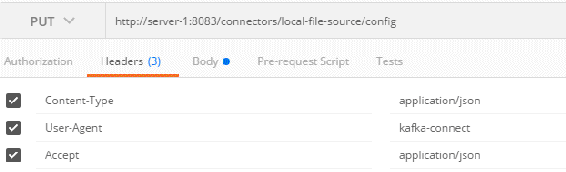
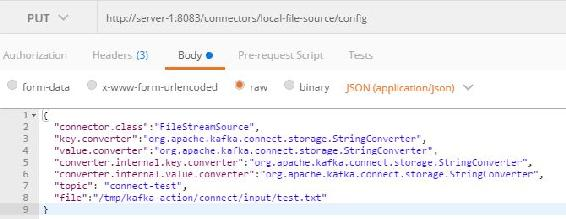
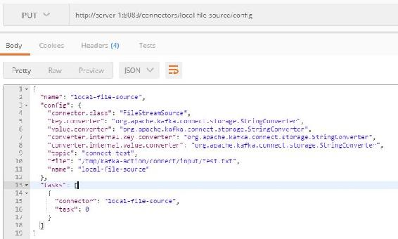
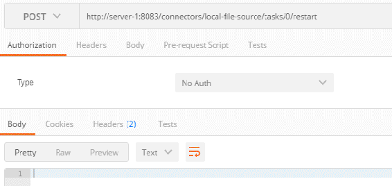
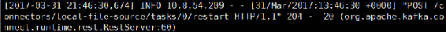
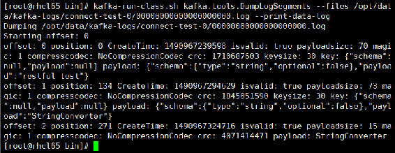
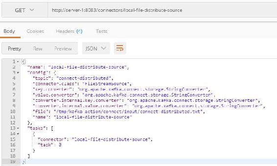
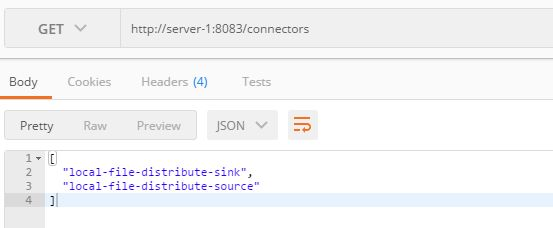

5.7 连接器基本操作
Kafka自带了对连接器应用的脚本，用于将数据从外部系统导入到Kafka或从Kafka中导出到外部系统。Kafka连接器有独立模式（standalone）和分布式模式（distributed）两种工作模式。Kafka自带脚本connect-standalone.sh和connect-distributed.sh分别对应Kafka连接器的两种工作模式。本节将根据Kafka提供的连接器执行脚本分别介绍在这两种工作模式下Kafka与外部系统之间数据交互的操作。
5.7.1 独立模式
Kafka自带脚本connect-standalone.sh用于以独立模式启动Kafka连接器。本小节详细介绍如何通过该脚本将文件中的数据导入到Kafka以及将Kafka中的数据导出到文件。
执行该脚本时需要指定两个配置文件，一个是worker运行时相关配置的配置文件，称为WorkConfig，在该文件中指定与Kafka建立连接的配置（bootstrap.servers）、数据格式转化类（key.converter/value.converter）、保存偏移量的文件路径（offset.storage.file.filename）、提交偏移量的频率（offset.flush.interval.ms）等。另外一个是指定source连接器或是sink连接器配置的文件，可同时指定多个连接器配置，每个连接器配置文件对应一个连接器，因此要保证连接器名称全局唯一，连接器名通过name属性指定。
1．Source连接器
Source连接器用于将外部数据导入到Kafka相应主题中。Kafka自带的connect-file- source.properties文件配置了一个读取文件的Source连接器，修改该配置文件内容如代码清单5-7所示。
代码清单5-7 connect-file-source.properties文件的具体内容
name=local-file-source
connector.class=FileStreamSource
tasks.max=1
file=/tmp/kafka-action/connect/input/test.txt
topic=connect-test该连接器运行一个task，按行将/tmp/kafka-action/streams/input/test.txt文件中的数据导入到一个名为“connect-test”的主题中。该配置文件各配置说明如表5-7所示。
表5-7 Source连接器配置说明
|
属 性 名 |
属 性 描 述 |
|---|---|
|
name |
连接器名称 |
|
connector.class |
Source连接器执行类，该类继承org.apache.kafka.connect.source.SourceConnector类 |
|
tasks.max |
SourceTask数量 |
|
file |
该连接器数据源文件路径 |
|
topic |
数据导入的目标主题名称 |
在启动连接器前，先在/tmp/kafka-action/connect/input目录下创建一个test.txt文件，然后执行以下命令启动一个从文件导入数据到Kafka的连接器：
connect-standalone.sh ../config/connect-standalone.properties ../config/connect
-file-source.properties该命令支持daemon参数，以daemon方式启动的命令如下：
connect-standalone.sh -daemon ../config/connect-standalone.properties ../
config/connect-file-source.properties连接器启动后会在logs目录下创建一个connectStandalone.out日志文件，该日志文件记录了连接器运行时相关的日志。连接器启动完成后，向test.txt文件中写入数据：
echo " kafka-connect " >> /tmp/kafka-action/connect/input/test.txt登录ZooKeeper客户端，查看主题元数据信息：
[zk: server-1:2181,server-2:2181,server-3:2181(CONNECTED) 43] ls
/brokers/topics/connect-test/partitions
[0]
[zk: server-1:2181,server-2:2181,server-3:2181(CONNECTED) 44] get
/brokers/topics/connect-test/partitions/0/state
{"controller_epoch":26,"leader":2,"version":1,"leader_epoch":0,"isr":[2]}由主题元数据信息可知，当启动一个Source连接器后，发送消息时会通过生产者创建主题的方式创建一个Source连接器启动时指定的主题（若该主题不存在），该主题拥有一个分区。该分区被分配到brokerId为2的节点上，在该节点执行以下命令，查看分区中导入的数据：
kafka-run-class.sh kafka.tools.DumpLogSegments --files
/opt/data/kafka-logs/connect-test-0/00000000000000000000.log --print-data-log该命令执行后输出结果：
offset: 0 position: 0 CreateTime: 1490848047199 isvalid: true payloadsize: 71 magic:
1 compresscodec: NoCompressionCodec crc: 2697874837 keysize: 30 key:
{"schema":null,"payload":null} payload:
{"schema":{"type":"string","optional":false},"payload":"kafka-connect"}从输出结果可以看到通过echo指令写入到文件中的信息被成功导入到Kafka中，该信息在Kafka中对应的消息格式为JSON字符串且带有schema信息，这是由于在connect-standalone. properties文件中设置了消息的Key和Value的转换类为org.apache.kafka.connect.json.Json Converter，同时设置了key.converter.schemas.enable和value.converter.schemas.enable两配置项的值为true。
Source连接器是通过多个SourceTask共享一个KafkaProducer将数据发送到Kafka，因此在Source连接器启动时，在启动日志中会看到加载ProduceConfig相关的配置信息。我们可以在WorkConfig中指定生产者级别的配置，即在connect-standalone.properties文件中通过“producer.”前缀来指定生产者级别的配置。
2．Sink连接器
Kafka自带脚本connect-console-sink.properties配置了一个将Kafka中的数据导出到文件的Sink连接器，这里将该配置文件稍微进行修改，指定数据导出路径为/tmp/kafka-action/connect/ output/test.txt。各Sink连接器的配置说明如表5-8所示。
表5-8 Sink连接器配置说明
|
属 性 名 |
属 性 描 述 |
|---|---|
|
name |
连接器名称 |
|
connector.class |
Sink连接器执行类，该类继承org.apache.kafka.connect.sink.SinkConnector类 |
|
tasks.max |
SinkTask数量 |
|
file |
数据导出后输出的目标文件路径 |
|
topics |
导出数据源对应的主题名称，可指定多个主题 |
执行以下命令，启动Sink连接器，将上一小节导入到Kafka的数据导出到/tmp/kafka-action/ connect/output/test.txt文件中：
connect-standalone.sh ../config/connect-standalone.properties ../config/connect
-file-sink.propertiesSink连接器是通过KafkaConsumer从指定的主题中消费消息，在Sink连接器启动日志中会看到加载ConsumerConfig的配置信息。在启动Sink连接器时可以在WorkConfig配置文件中以“consumer.”为前缀来指定Consumer级别的配置。本小节介绍的FileStreamSink连接器，默认情况下是以Sink连接器名作为group.id的，且不同的连接要求名称全局唯一，也就是说，默认情况下不同的连接器属于不同的消费组。
可以同时启动多个Sink连接器。将connect-file-sink.properties文件复制一份命名为connect-file-sink-2.properties，同时修改该文件内容如代码清单5-8所示。
代码清单5-8 connect-file-sink-2.properties文件的具体内容
name=local-file-sink-2
connector.class=FileStreamSink
tasks.max=1
file=/tmp/kafka-action/connect/output/test2.txt
topics=connect-test执行以下命令，同时启动两个Sink连接器：
connect-standalone.sh ../config/connect-standalone.properties ../config/connect-
file-sink.properties ../config/connect-file-sink-2.properties连接器启动成功后，打开两个Sink连接器对应的目标文件可以看到两个文件内容相同，这是由于这两个连接器属于两个不同的消费组，因此同一条消息会被这两个连接器同时消费。
5.7.2 REST风格API应用
Kafka提供了一套基于REST风格API接口来管理连接器，默认端口为8083，也可以在启动Kafka连接器前在WorkConfig配置文件中通过rest.port配置端口。相关的REST风格接口在Kafka connect源码runtime工程的org.apache.kafka.connect.runtime.rest.resources包下定义。相关的REST风格接口说明如表5-9所示。
表5-9 Kafka连接器管理REST风格接口说明
|
接口url |
访问方式 |
接 口 说 明 |
|---|---|---|
|
/ |
GET |
查看Kafka版本信息 |
|
/connectors |
GET |
查看当前活跃的连接器列表，显示连接器的名字 |
|
/connectors |
POST |
根据指定配置，创建一个新连接器 |
|
/connectors/{connector} |
GET |
查看指定连接器的信息 |
|
/connectors/{connector}/config |
GET |
查看指定连接器的配置信息 |
|
/connectors/{connector}/config |
PUT |
修改指定连接器的配置 |
|
/connectors/{connector}/status |
GET |
查看指定连接器的状态 |
|
/connectors/{connector}/restart |
POST |
重启指定连接器 |
|
/connectors/{connector}/pause |
PUT |
暂停指定的连接器 |
|
/connectors/{connector}/resume |
PUT |
恢复所指定的被暂停的连接器 |
|
/connectors/{connector}/tasks |
GET |
查看指定连接器正在运行的Task |
|
/connectors/{connector}/tasks |
POST |
修改Task配置，即覆盖现有Task，只支持分布模式 |
|
/connectors/{connector}/tasks/{task}/status |
GET |
查看某个连接器的某个Task的状态 |
|
/connectors/{connector}/tasks/{task}/restart |
POST |
重启某个连接器的某个Task |
|
/connectors/{connector} |
DELETE |
删除指定连接器 |
|
/connector-plugins |
GET |
查看已配置的连接器，显示连接器实例类完整路径 |
|
/connector-plugins /{connectorType}/config/validate |
PUT |
验证指定的配置，返回各配置 |
表5-9中，{connector}指待查看的连接器名，即连接器配置文件name字段指定的值，{task}指待查看的Task的taskId，{connectorType}指连接器配置文件中connector.class指定的值。
对表5-9中列举的连接器的相关操作，不再逐个进行操作讲解，这里着重讲解如何通过模拟HTTP请求工具Postman访问Kafka连接器的REST风格接口修改一个连接器的配置。
首先启动Kafka自带的FileStreamSource连接器，然后向该连接器指定的数据源文件通过echo指令写一条数据：
echo "restful test" >> /tmp/kafka-action/connect/input/test.txt此时分区中数据内容如下：
offset: 0 position: 0 CreateTime: 1490962508781 isvalid: true payloadsize: 70 magic:
1 compresscodec: NoCompressionCodec crc: 2046084259 keysize: 30 key:
{"schema":null,"payload":null} payload:
{"schema":{"type":"string","optional":false},"payload":"restful test"}可以看到当前消息是以JSON字符串的形式存储的，现在通过REST风格接口修改数据转换类为org.apache.kafka.connect.storage.StringConverter。
首先，设置HTTP请求方式为POST，同时设置HTTP的header信息，在Postman的Headers界面配置以下HTTP头信息：
Content-Type: application/json
User-Agent: kafka-connect
Accept: application/json在HTTP请求工具Postman的Headers子菜单中配置HTTP请求头如图5-12所示。

图5-12 Headers信息设置
然后，在Postman的Body界面中以JSON格式设置需要修改的配置信息，如代码清单5-9所示。
代码清单5-9 修改消息导入的数据格式的具体设置
{
"connector.class":"FileStreamSource",
"key.converter":"org.apache.kafka.connect.storage.StringConverter",
"value.converter":"org.apache.kafka.connect.storage.StringConverter",
"converter.internal.key.converter":"org.apache.kafka.connect.storage.StringConverter",
"converter.internal.value.converter":"org.apache.kafka.connect.storage.StringConverter",
"topic": "connect-test",
"file":"/tmp/kafka-action/connect/input/test.txt"
}设置消息的Key和Value的转换类为org.apache.kafka.connect.storage.StringConverter，通过连接器修改配置时配置项connnector.class和topic配置项必须指定，若不指定虽然请求能够成功，但所进行的修改并不会生效，在连接器运行日志中会有相应的异常提示信息。同时，修改配置时配置项file也需指定，否则该连接器修改后的配置会由于没有指定从哪个数据源文件中读取数据，而导致即使向原指定的数据源文件中通过echo指定写入数据，Kafka也将接收不到任何消息。由此可知，其实每次的修改都是根据相应配置新创建一个连接器实例。
在Postman中通过访问REST风格接口修改连接器配置的完整设置如图5-13所示。

图5-13 Postman请求修改连接器配置的具体设置
修改连接器配置的请求执行后，会返回连接器当前的配置信息，如图5-14所示。

图5-14 修改连接器配置请求响应结果
然后再通过echo指令向数据源文件中写入一条数据，由于元数据在间隔一定时间后才更新，因此可能修改的配置并没有立即生效，可以重新启动该连接器的Task使当前连接器所进行的修改立即生效。在Postman中通过访问REST风格接口重启Task操作如图5-15所示，只需在请求的url地址中指定需要重启的taskId，并指定操作指令为“restart”即可。

图5-15 重启连接器Task操作请求设置
由于是重启操作，所以该接口调用并不会返回操作响应结果。通过查看连接器运行日志可看到该接口返回应答信息如图5-16所示，即表示Task重启成功。

图5-16 Task成功启动相应日志信息
重启Task之后，再次执行echo指令将写入的数据通过StringConverter类转化为普通文本消息。配置修改前后分区中的信息对比如图5-17所示。

图5-17 连接器数据格式修改前后的数据对比
5.7.3 分布式模式
Kafka自带的connect-distributed.sh脚本用于以分布式模式运行连接器，执行该脚本时需要指定一个WorkConfig类型的配置文件，但以分布式模式启动连接器并不支持在启动时通过加载连接器配置文件创建一个连接器，而只能通过访问REST风格接口创建连接器。
以分布式模式启动连接器时，通常需要关注如表5-10所示的配置项。
表5-10 分布式模式连接器配置说明
|
属 性 名 |
属 性 描 述 |
|---|---|
|
group.id |
连接器Cluster的唯一标识 |
|
bootstrap.servers |
与Kafka代理建立连接的配置 |
|
config.storage.topic |
用于存储连接器相关配置信息的主题，包括创建连接的配置信息以及该连接的Task信息。要指定该主题拥有一个分区和多个副本，需要手动创建 |
|
offset.storage.topic |
用于存储Source连接器读取数据对应偏移量的主题，与存储消费者提交偏移量的内部主题作用相同。该主题通常有多个分区和多个副本，若Kafka启动时指定auto.create.topics.enable=true，则根据默认分区及副本数自动创建该主题，因此建议该主题也通过手动创建 |
|
status.storage.topic |
用于存储连接器每个Task状态的主题，该主题通常也有多个分区和多个副本，也需要手动创建 |
|
session.timeout.ms |
用于设置连接器的Work与WorkCoordinator之间的最大超时时间，Work会周期性地向WorkCoordinator发送心跳，让WorkCoordinator以此来判断Work是否有效，若在该配置时间内还未收到Work发送的心跳则WorkCoordinator会将该Work从工作组中移除，同时触发WorkCoordinator进行平衡操作 |
|
offset.flush.interval.ms |
连接器Task提交偏移量的时间间隔 |
|
heartbeat.interval.ms |
连接器Work向WorkCoordinator发送心跳检测的间隔时间，推荐该值不超过session.timeout.ms的1/3 |
在对连接器分布式模式运行的配置了解之后，按以下步骤运行Kafka自带的FileStream Source连接器和FileStreamSink连接器。
（1）修改WorkConfig配置文件。修改${KAFKA_HOME}/config目录下的connect- distributed.properties文件，这里仅进行以下修改：
bootstrap.servers=server-1:9092,server-2:9092,server-3:9092（2）创建相关主题。依次创建connect-distributed.properties文件中配置的3个主题。
（a）创建保存偏移量的主题，命令如下：
kafka-topics.sh --create --zookeeper server-1:2181,server-2:2181,server-3:2181
--replication-factor 2 --partitions 3 --topic connect-offsets（b）创建保存连接器配置的主题，命令如下：
kafka-topics.sh --create --zookeeper server-1:2181,server-2:2181,server-3:2181
--replication-factor 2 --partitions 1 --topic connect-configs（c）创建保存Task状态的主题，命令如下：
kafka-topics.sh --create --zookeeper server-1:2181,server-2:2181,server-3:2181
--replication-factor 2 --partitions 3 --topic connect-status（3）分布式模式启动。执行connect-distributed.sh脚本，以分布式模式启动连接器，执行命令如下：
connect-distributed.sh ../config/connect-distributed.properties启动日志输出中会有几行警告信息，提示所提供的某个配置项是未知配置：
WARN The configuration 'config.storage.topic' was supplied but isn't a known config这是由于在连接器启动时会加载ProducerConfig和ConsumerConfig，而对ProducerConfig和ConssumerConfig初始化时会将WorkConfig中的所有配置加入到这两类配置对应的Map中，由于Work中的部分配置并不是ProducerConfig或ConsuermConfig中定义的配置项，因此在解析配置项时会给出警告信息。同样支持设置以“producer.”作为配置项前缀的生产者级别的配置和以“consumer.”作为配置项前缀的消费者级别的配置。
（4）创建一个FileStreamSource连接器。首先，在/tmp/kafka-action/connect/input目录下创建一个名为connect-distributed.txt文件，然后编辑创建FileStreamSource连接器的相关配置，配置内容如代码清单5-10所示。我们指定该连接器将/tmp/kafka-action/connect/input/connect- distributed.txt文件中的数据导入一个名为“connect-distributed”的主题中，数据转化类为org.apache.kafka.connect.storage.StringConverter。
代码清单5-10 分式式模式请求创建FileStreamSource连接器的相关配置
{
"name": "local-file-distribute-source",
"config": {
"topic": "connect-distributed",
"connector.class": "FileStreamSource",
"key.converter": "org.apache.kafka.connect.storage.StringConverter",
"value.converter": "org.apache.kafka.connect.storage.StringConverter",
"converter.internal.key.converter": "org.apache.kafka.connect.storage.
StringConverter",
"converter.internal.value.converter": "org.apache.kafka.connect.storage.
StringConverter",
"file": "/tmp/kafka-action/connect/input/connect-distributed.txt"
}
}通过访问REST风格接口创建连接器。在Postman中首先设置HTTP请求头信息（设置与5.7.2节所介绍的配置相同），然后在消息体中加入代码清单5-10对应的连接器配置信息，并指定请求方式为POST，在Postman中的设置如图5-18所示。

图5-18 访问REST风格接口请求创建Source连接器的相关设置
待创建连接器的请求成功返回后，通过REST风格接口查看该连接器的信息。在Postman中访问REST风格接口请求查看该连接器的信息设置及响应结果如图5-19所示。

图5-19 REST风格接口请求查看该连接器的信息设置及响应结果
然后，向connect-distributed.txt发送数据，验证FileStreamSource连接器是否正常运行。
echo "connect-distributed" >> /tmp/kafka-action/connect/input/connect-distributed.txt此时，登录ZooKeeper客户端，查看目标主题“connect-distributed”是否被创建以及该主题分区对应的节点信息：
[zk:server-1:2181,server-2:2181,server-3:2181(CONNECTED)38]get /brokers/topics/
connect-distributed/partitions/0/state
{"controller_epoch":31,"leader":2,"version":1,"leader_epoch":0,"isr":[2]}登录分区对应的节点，查看导入的数据，执行命令如下：
kafka-run-class.sh kafka.tools.DumpLogSegments --files /opt/data/kafka-logs/
connect-distributed-0/00000000000000000000.log --print-data-log输出结果为：
Starting offset: 0
offset: 0 position: 0 CreateTime: 1491039692562 isvalid: true payloadsize: 19 magic: 1 compresscodec: NoCompressionCodec crc: 1188385350 payload: connect-distribute至此，FileStreamSource连接器已正常运行。
（5）创建一个FileStreamSink连接器。通过REST风格接口创建一个FileStreamSink连接将第4步导入的数据导出到connect-distributed-sink.txt文件中。创建该连接器的配置如代码清单5-11所示，对应的connector.class为FileStreamSink，通过topics参数指定数据源主题。
代码清单5-11 实例化FileStreamSink连接器的具体配置
{
"name": "local-file-distribute-sink",
"config": {
"topics": "connect-distributed",
"connector.class": "FileStreamSink",
"key.converter": "org.apache.kafka.connect.storage.StringConverter",
"value.converter": "org.apache.kafka.connect.storage.StringConverter",
"converter.internal.key.converter": "org.apache.kafka.connect.storage.
StringConverter",
"converter.internal.value.converter": "org.apache.kafka.connect.storage.
StringConverter",
"file": "/tmp/kafka-action/connect/output/connect-distributed-sink.txt"
}
}将该FileStreamSink连接器配置信息在Postman中执行后，查看当前活跃的连接器信息如图5-20所示。

图5-20 访问REST风格接口请求查看当前连接器的操作及响应结果
在/tmp/kafka-action/connect/out/目录下会自动创建一个connect-distributed-sink.txt文件，打开该文件，可以看到导入到Kafka中的数据已被成功导出，如图5-21所示。
图5-21 分布式模式创建的Sink连接器导出数据效果
至此，连接器分布式模式基本操作已介绍完毕。关于连接器的其他操作，如多任务运行、REST风格访问跨域设置、安全组件验证等，在这里不再展开介绍。
Table of contents
- 版权信息
- 内容提要
- 前言
- 第1章 Kafka简介
- 第2章 Kafka安装配置
- 第3章 Kafka核心组件
- 第4章 Kafka核心流程分析
- 第5章 Kafka基本操作实战
- 第6章 Kafka API编程实战
- 第7章 Kafka Streams
- 第8章 Kafka数据采集应用
- 第9章 Kafka与ELK整合应用
- 第10章 Kafka与Spark整合应用
- 欢迎来到异步社区！